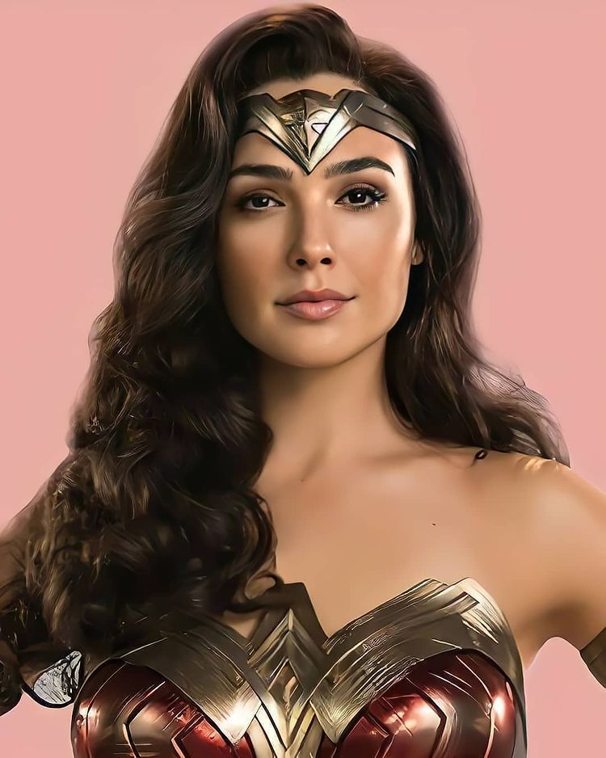
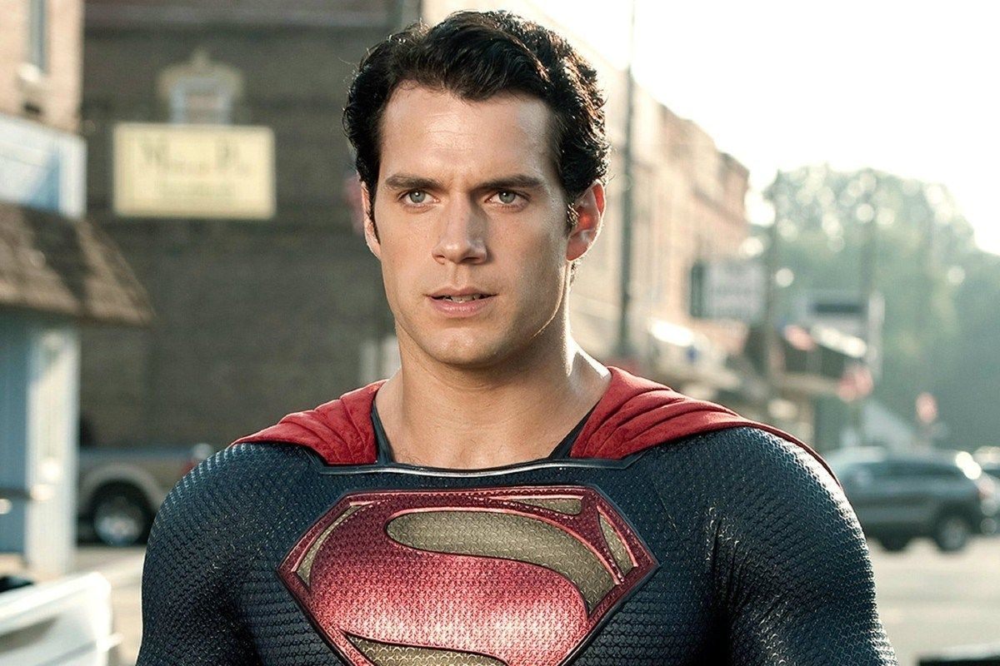

Bruce Wayne es el único personaje que se identifica como Batman y aparece en Batman, Detective
Comics, Batman y Robin, y Batman: The Dark Knight. Dick Grayson vuelve al manto de Nightwing

Mujer Maravilla
El personaje apareció como tal publicado por primera vez en la revista de historietas All Star
Comics (de diciembre de 1941)1 y con su alter-ego en el Sensation Comics

superman
Superman nace en un mundo extraño a una especie tecnológicamente avanzada que se parece a los
humanos. Poco después de nacer, su planeta se destruye en un cataclismo natural